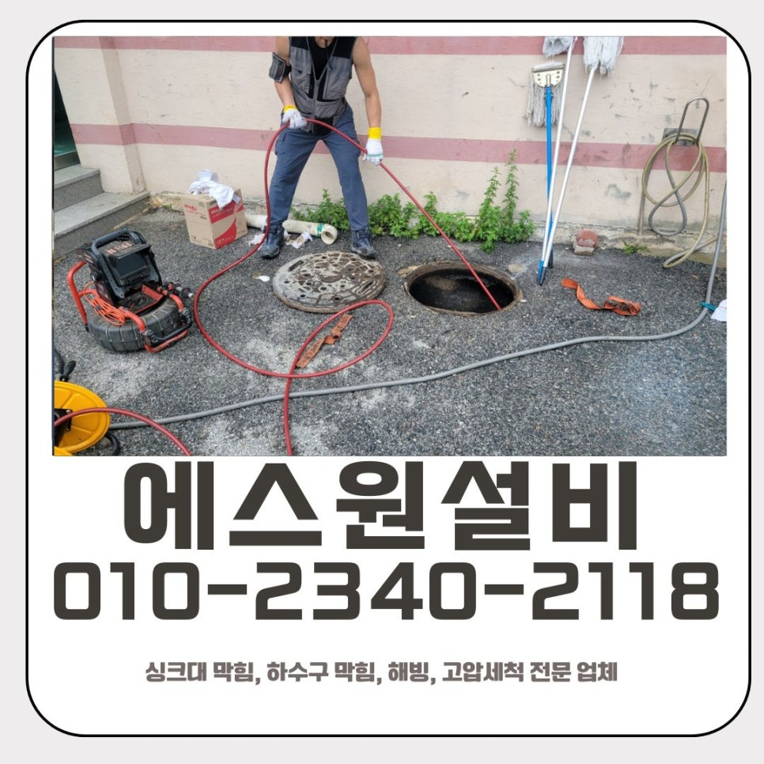
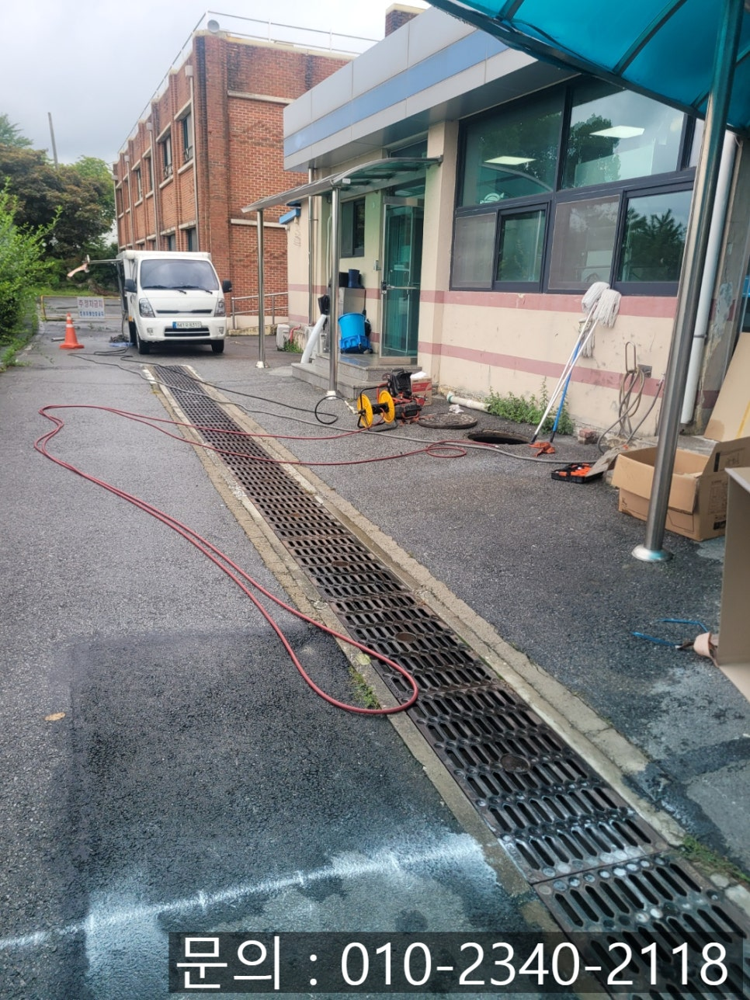
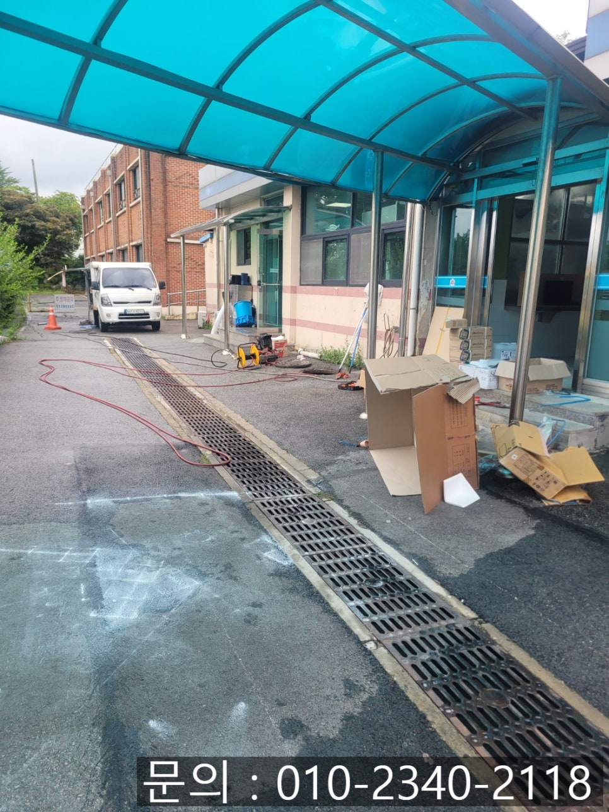
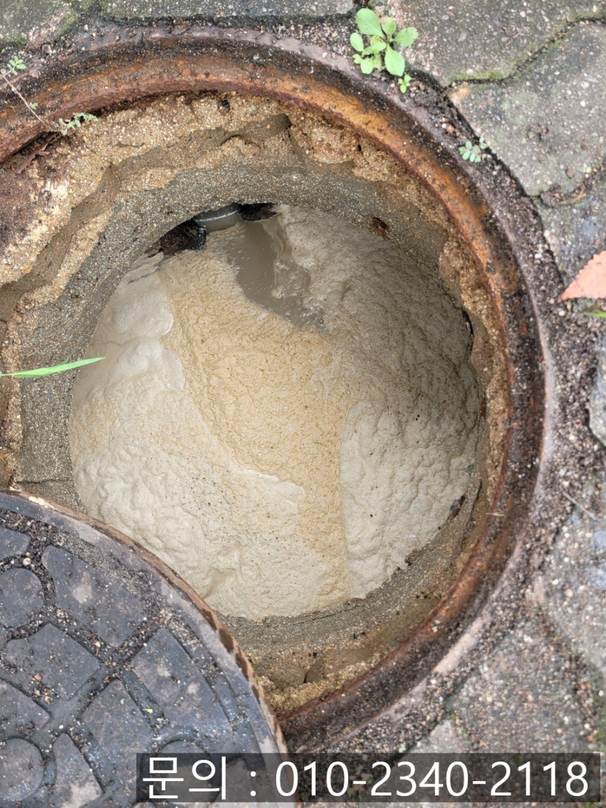
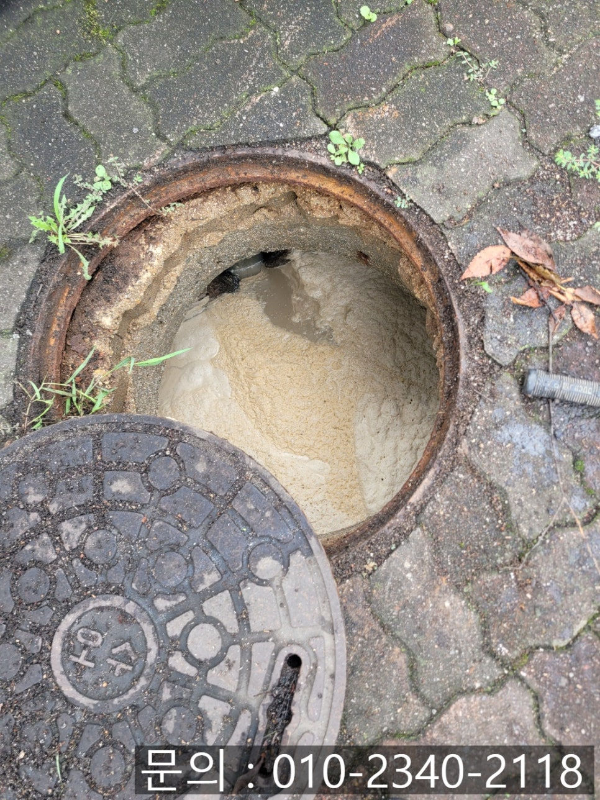
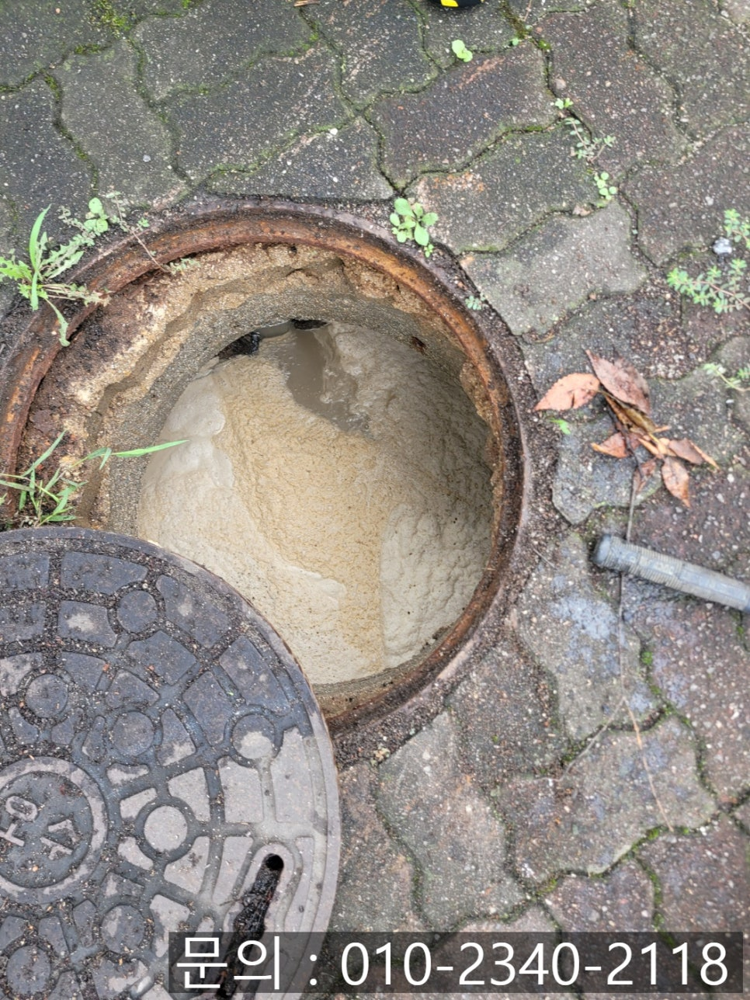
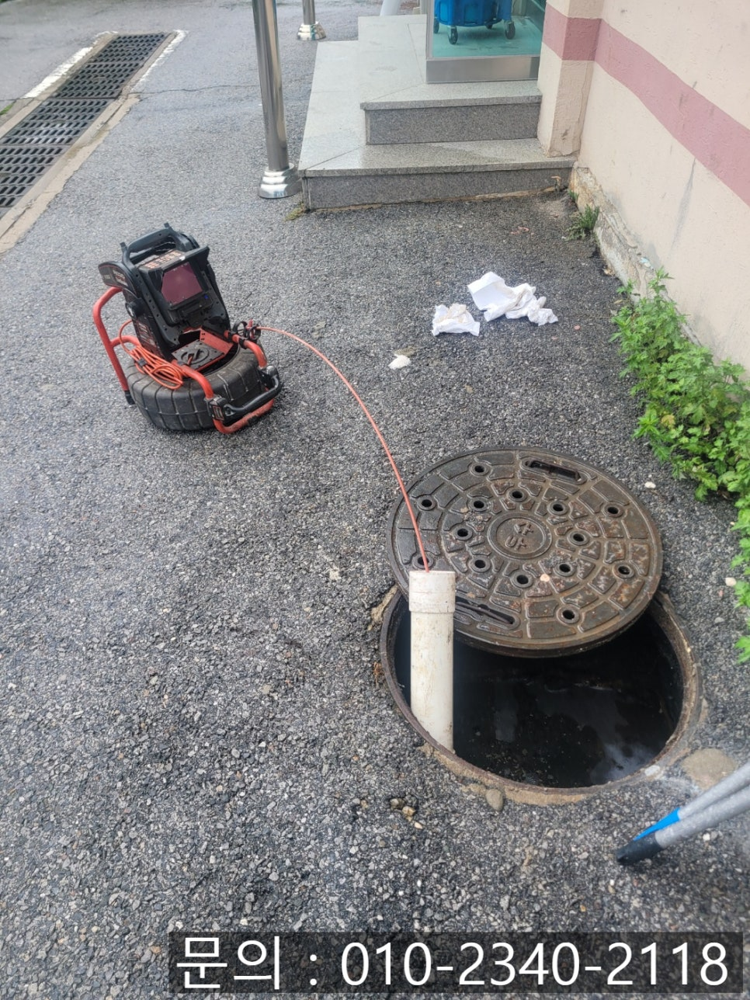

🏠 분당동 하수구 막힘 성남 수내동 급식실 맨홀 역류 고압세척 전문 설비 업체
성남 분당동 하수구막힘 전문 시공 후기

📋 작업 개요
- 위치: 성남 분당동, 분당동, 성남
- 서비스 유형: 하수구막힘, 배관막힘, 맨홀막힘, 역류해결, 뚫는업체, 배관청소, 고압세척, 배관보수
- 작업 일시: 2025. 8. 16. 10:10
- 업체명: 하수구수사대 (010-5615-2118)
🔍 문제 상황
안녕하세요.
성남 수내동 급식실 맨홀 역류 고압세척 전문 설비 업체 에스원 설비입니다.
요즘은 배관 관련 업체들이 정말 많이 있죠. 검색만 해도 수십 곳이 나옵니다. 하지만 고압세척은 얘기가 달라져요. 이 장비는 고가의 전문 장비라, 실제로 보유하고 있는 업체가 생각보다 많지 않아요. 그래서 고압세척이 꼭 필요한 상황에서 장비가 없는 업체들은 임시방편으로만 문제를 해결하는 경우가 많습니다.
겉으로는 막힘을 뚫어낸 것처럼 보여도 속에는 여전히 찌꺼기가 남아, 금세 또 막히는 것이죠. 결국 중요한 것은 아예 처음에 믿고 맡길 수 있는 확실한 업체를 선택하는 겁니다. 전문 장비를 직접 보유하고, 경험과 노하우를 갖춘 곳이라면 배관 속까지 확실히 청소하여 막힘을 확실하게 해소할 수 있는 것이죠.

🔎 원인 분석
💡 전문가 진단: 정밀 진단 장비를 사용하여 슬러지의 고착 여부를 판명하고 타격/세척 작업을 실시했습니다.
오늘은 고압세척 장비를 이용하여 하수구 역류 현장 문제를 해결했던 사례를 공유하면서 전문 장비를 보유하는 것의 중요성에 대해 함께 포스팅해 볼게요!
학교 측에서 다급하게 전화를 주셨어요. 급식실 하수구가 역류해 물이 내려가지 않는 긴급 상황이 발생했다고 하셨어요. 학교에서 하수구가 역류한다는 것은 불편함을 넘어, 학생들의 위생과 건강 그리고 급식실에서 일하는 영양사. 조리사 선생님들의 작업 환경에도 큰 영향을 줍니다. 하루 세 끼 중 한 끼 이상을 책임지는 곳이기 때문에 깨끗하고 안전한 환경이 필수입니다.
또한 학교는 일반 건물보다 훨씬 보수적인 공간입니다. 출입 전부터 안전과 위생을 위해 각종 서류 제출이 필수이고, 방문 작업자의 신원과 경력까지 꼼꼼히 확인합니다. 그래서 이런 환경에서 작업하려면 현장 작업에 대응하는 능력뿐 아니라 사전 준비가 잘 되어 있어야 하죠. 에스원 설비는 이런 서류 절차를 빠짐없이 갖추고 있어, 학교나 관공서, 공공기관에서도 안심하고 맡기실 수 있답니다.
학교 측의 허가를 받고 분당동 하수구 막힘 현장에 들어가 확인해 보니, 맨홀 하수구 주변으로 물이 고여 있었고, 하수구에서는 심한 악취가 올라오고 있었어요. 기름 냄새와 음식물 썩는 냄새가 섞여 있어 조리 공간으로서는 상당히 불쾌한 상황이었어요.

🔧 작업 과정
분당동 하수구 막힘 원인을 파악하기 위해 건물 외부에서 맨홀 뚜껑을 열고 배관 내시경을 투입시켰어요. 화면에는 배관 안쪽이 온통 갈색과 회색의 끈적한 슬러지로 가득했어요.
슬러지들이 진흙처럼 뭉쳐 물길을 거의 막고 있었어요. 급식실은 많은 인원의 식사를 준비하다 보니 기름을 사용한 튀김 요리가 자주 나오고, 음식물 찌꺼기 양도 많습니다. 이런 것들이 조금씩 쌓이다 보면 기름 성분이 굳어 단단해지는 덩어리를 만들고 결국 배관 안에서 막힘이 되는 원인이 됩니다.
우선 갈고리 도구로 꺼낼 수 있는 큰 덩어리들을 하나씩 건져내어 주었어요. 그러나 배관 벽면에 달라붙어 있는 찌꺼기는 단단하고 끈적해서 단순한 제거로는 부족했어요.
그래서 고압세척 장비를 준비하였어요. 고압세척기는 강력한 수압을 이용하여 하수구 배관 벽에 붙은 기름때와 슬러지를 밀어내 주면서 작동하는 전문 장비입니다. 물줄기가 엄청 강력하게 쏘아주기 때문에 배관 구석구석을 긁어주든 청소해 주어, 오래된 기름때도 시원하게 떨어져 나갑니다.
세척을 시작하다 배관 속에 있던 슬러지 덩어리들이 물살을 타고 쏟아져 나오기 시작했어요. 내시경 화면에서 물길이 점점 열리고 흐름이 빨라지는 모습이 보이니 속이 다 시원했습니다.
몇 차례 반복하여 청소 작업을 하고 나니 배관 내부가 거의 새것처럼 깨끗해지고 건물 내부에서 외부까지 물도 한 번에 "쏴아~" 하고 내려갔어요.


✅ 작업 완료
마지막으로 작업 중 튄 오염물과 바닥에 묻은 찌꺼기를 고압세척기의 물 청소로 싹 씻어내고 주변을 정돈하였어요. 급식실 특성상 위생이 매우 중요하기 때문에 청소와 정리는 작업만큼이나 꼼꼼하게 진행한답니다.
기름을 하수구에 바로 흘려보내지 않고 최대한 닦아내고 버리면 막힘을 예방하는데 큰 도움이 됩니다. 급식실 하수구 역류 사례처럼 위생이 중요한 공간에서는 문제를 미루지 말고 전문 장비를 갖추고 있는 성남 수내동 급식실 맨홀 역류 고압세척 전문 설비 업체 에스원 설비에 연락 주시길 바랄게요.




⚠️ 하수구 배관 막힘 예방 및 관리 가이드
- ✅ 머리카락, 비닐, 물티슈 등 물에 분해되지 않는 이물질은 하수구 유입을 절대 금지해 주세요.
- ✅ 하수구 거름망을 씌우고 모여진 이물질은 주기적으로 쓰레기통에 바로 비워주셔야 합니다.
- ✅ 배관 노후가 심할 경우 이물질이 더 쉽게 걸리므로 주기적인 배관 세척(고압세척 등)을 권장합니다.
- ✅ 작업 후 1년 이내 재발 시 하수구수사대에서 무상 A/S 보증 서비스를 제공합니다.
💡 핵심 정리
- 확실한 장비 작업(내시경 점검 및 샤프트 스케일링)으로 원인을 뿌리 뽑습니다.
- 작업 후 1년 이내에 동일한 부위 재발 시 100% 무상 A/S 서비스를 보장합니다.
- 서울 · 경기 · 인천 전 지역에 24시간 언제든 긴급 출동할 수 있도록 항시 대기 중입니다.
❓ 자주 묻는 질문 (FAQ)
🚨 성남 분당동 하수구막힘 문제로 고민이신가요?
정확한 원인 진단과 확실한 시공으로 재발 없는 해결을 약속드립니다.
24시간 긴급 출동 | 서울 · 경기 · 인천 전지역 | 1년 내 재발 시 무상 A/S